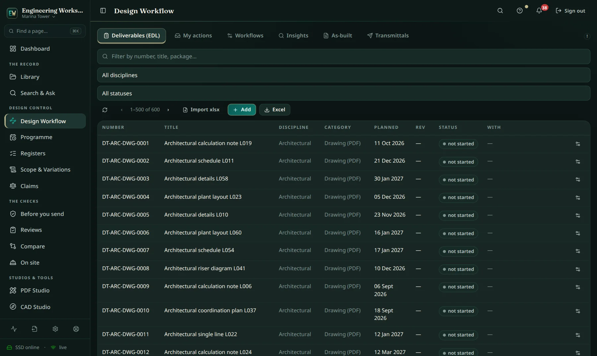

Engineering Workspace was not designed as a product and then looked for a project. It was written inside the delivery of a live mega-project by the engineer running that delivery, on the days the problems appeared — and it has carried that project's documents, workflows and correspondence every working day since.
Every number on this site is a reading from one live workspace, not a projection. Here is exactly where each one comes from, so you can ask us to show you the same reading live.
These are first-party readings from a confidential project record, so the record itself is not public. On a serious evaluation we will happily show the readings live on a screen share, or under NDA.
The follow-up engine exists because replies went missing. The claims ledger exists because entitlement had to be reconstructed from twelve folders at the worst possible moment. The scope screen exists because a consultant comment quietly added work that nobody registered. Nothing in this workspace was invented to fill a feature grid — each part was written the week its absence cost something real.

Project names, employers, consultants and document numbers are withheld and every screenshot on this site uses a fictional demonstration project. Client confidentiality is not negotiable — the same discipline applies to your data when you run the workspace.